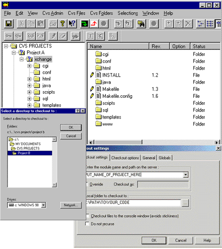
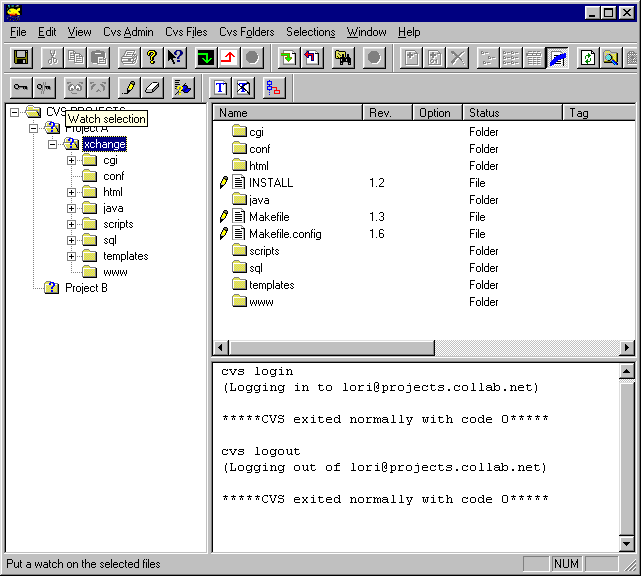
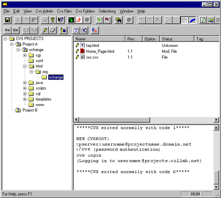
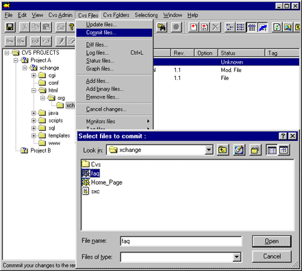
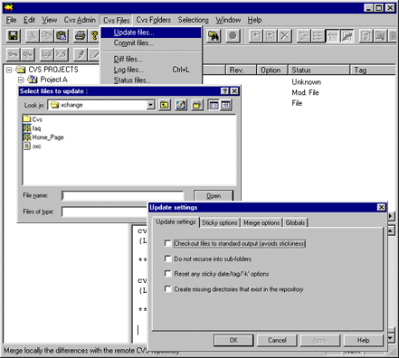

Help for WinCvs: Index
- Setting up WinCvs
- You are here: Checking source files in and out of WinCvs
- Managing files in WinCvs
- You are here: Checking source files in and out of WinCvs
Checking out source files
Before you can make changes to source files, you must check out (make a copy on your local hard disk) the project or "module" files you want. A module is a subset of the entire project file repository.
Log in to the project's CVS server and provide your password. Then select Checkout module... from the Create menu to retrieve the latest versions of files. The default selection is all file, or you can select a specific module to check out.
You can use the left-hand navigation pane to see the directories and files in that module:

More
about logging in to the project server
More
about checking out source files
Adding/committing files
WinCvs is not a file editor. You can use the file editor of choice on your local machine to modify project files you have checked out. When you have completed your changes to files on your hard drive, you can commit those changes back into the project's CVS repository.
The following example shows the WinCvs window after committing some changes in a directory containing html content files.

Whenever you create a new file on your hard disk and you want to add that file to the project, an "unknown file" icon will appear next to your new files.
Select the new file and click the "Add Selected"
or "Add Selected Binary" button
in the toolbar to mark the file as under version control.
Use "Add Selected " for files that are basically text files (e.g., *.txt or *.html).Note: Marking the file as "added" does not put it into the project's CVS repository! You must then commit it.
Use "Add Selected Binary" for files that have non-text formats (e.g., application data files or graphics).
Files that still need to be committed display a red icon next to them. To commit these files:
- Select the entire directory in the left-hand pane, or select only those individual files to be committed.
- Click the commit icon
 in
the tool bar. You are prompted for a log message.
in
the tool bar. You are prompted for a log message.
- Enter a brief description of the changes made to each file.
The results of the committing a file are displayed in the lower right-hand pane. If problems or conflicts are encountered during the merge, WinCvs aborts the commit process. You must then open the file in your file editor, resolve the conflicts, save it again, and then commit.

More
about adding files
More
about committing files
Updating/merging files
You should always update your working copy of the project repository before you commit your changes. This ensures that you are making changes to the most recent versions of files. Updating will not overwrite your modifications if another developer has made changes to the same file(s). Instead, WinCvs attempts to merge the two versions.
To update, select Update files... on the CVS Files menu and select the file(s) or folder(s) you wish to update.

For information on file statuses and comparing files, see Managing files in WinCvs.
Back to main Help index